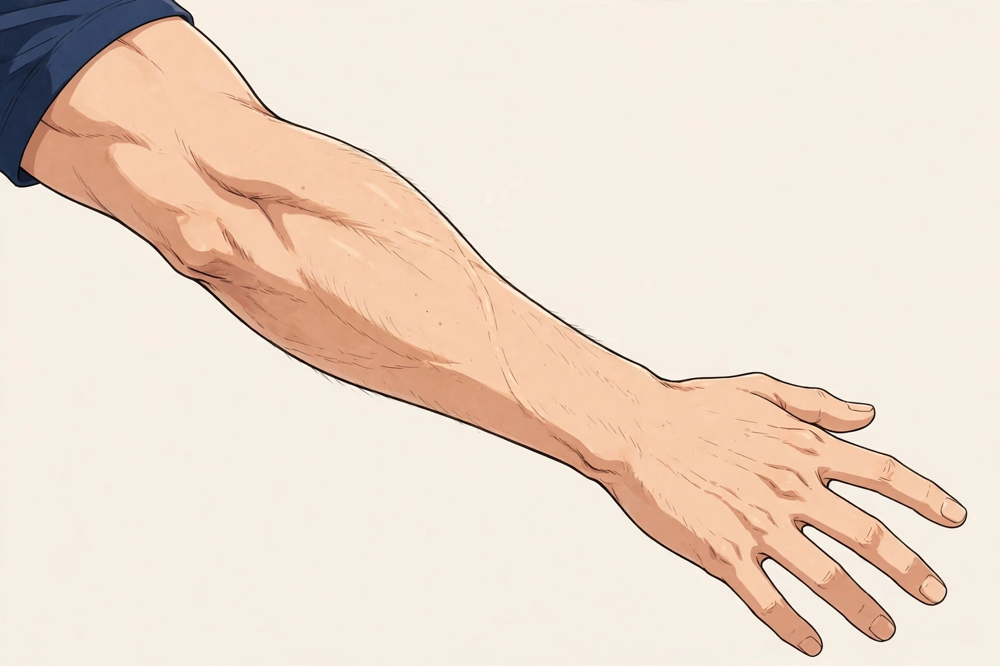

SYMPTOM GUIDE ｜ 東三国・新大阪
手首を反らしたときの痛みでお悩みの方へ東三国・新大阪の男性専用整体院 北辰堂

手をついて立ち上がるとき、雑巾を絞るとき、手首を反らすと甲側に痛みが出る——。手首を反らしたときの痛みは、日常の何気ない動作に直結する感覚です。
このページでは、手首の背側（甲側）の構造と、反らす動きで負担がかかる場所、腱鞘炎のページとの違い、東洋医学の考え方とツボ、施術の考え方、セルフケア、受診の目安を整理しました。「反らしたとき」という動きに絞って解説します。一般的な健康情報としてご覧ください。
① 手首を反らしたときの痛みとは
手首を反らす動き（背屈）では、手の甲側を通る伸筋腱が引っ張られ、手首の背側の関節に圧縮の力がかかります。甲側には、指を伸ばす総指伸筋、手首を反らす橈側手根伸筋群などの腱が、腱鞘に包まれて並んでいます。
反らしたときの痛みの背景として多いのは、伸筋腱への繰り返しの負担です。キーボードやマウス操作で手首を反らした姿勢が続くこと、手をつく動作の繰り返し、トレーニングでの手首の使い方が重なると、腱や腱鞘、関節の背側に負担が蓄積します。
腱鞘炎のページでは腱の滑走と炎症を中心に扱いましたが、このページでは「反らす」という動作で痛みが出る仕組みに絞ります。痛む場所が甲側か掌側か、しびれを伴うかどうかで、考える要因が変わります。
手の甲側には指や手首を伸ばす腱が並びます。反らす動きでは、これらの腱の引っ張りと、背側関節への圧縮が同時に起こります。位置は目安です。
② 要因の整理
反らしたときの痛みの要因は、使い方と姿勢に整理できます。
- 反らした姿勢の持続：キーボード操作で手首が反ったまま固定されると、伸筋腱が働き続けます。ノートパソコンの角度が典型です。
- 手をつく動作の繰り返し：立ち上がるときに手をつく、腕立て伏せ、ヨガのポーズなど、体重を手首に預ける動作は背側への負担になります。
- 前腕の筋肉の疲労：伸筋腱を動かす前腕の筋肉が疲労すると、腱の滑走が悪くなり、反らすたびに痛みとして感じやすくなります。
- 過去の捻挫・骨折の影響：手首の捻挫や骨折の後に、関節の動きの硬さが残ると、反らす範囲で痛みが出ることがあります。
- ガングリオンなどの腫れ：手首の背側にできるガングリオン（ゼリー状の腫れ）が、反らす動きで圧迫され、痛みの要因になることがあります。
③ セルフチェックリスト
手首の状態を振り返るためのチェックです。痛む場所と場面に注目してお使いください。
- 手をついて立ち上がると手首の甲側が痛む
- 手首を反らすと詰まる感じや痛みがある
- キーボード作業が長い日は痛みが強い
- 手首の甲側に小さな腫れやふくらみがある
- 雑巾を絞る・ドアノブを回す動作で痛む
- 反らせる角度が反対の手より小さい
- 手首の捻挫や骨折をしたことがある
- 痛みにしびれは伴わない
チェックは診断のためのものではありません。腫れや熱感が強い、手が動かしにくい、しびれを伴う場合は、⑧の受診の目安を確認してください。
④ 東洋医学から見た考え方とツボ
東洋医学では、手首の甲側は手の少陽三焦経と手の陽明大腸経が通る場所です。外関や陽池は、手首の背側の代表的なツボとして知られ、手首の動きや張りと関係づけられます。
前腕から手首にかけての巡りが滞ると、動きの痛みとして感じやすくなるという見方をします。前腕の筋肉をゆるめることは、ツボのケアとあわせて基本になります。
陽池は手首の甲側の中央、外関はその少し前腕側、合谷は手の甲の親指と人差し指の間にあります。位置は目安です。
ツボ：陽池（ようち）
位置：手首の甲側、横皺の中央あたりのくぼみです。三焦経のツボで、手首の背側の中心に位置します。
押し方：反対側の親指の腹でくぼみを押さえ、小さく円を描きます。骨の間のくぼみのため、弱めの圧で30秒ほど行います。
ツボ：外関（がいかん）
位置：手首の甲側の横皺から、指3本分ほど前腕側に上がった中央です。
押し方：指の腹でゆっくり圧を加え、前腕側へ小さく滑らせます。前腕の張りとセットでほぐしたい場所です。
ツボ：合谷（ごうこく）
位置：手の甲側、親指と人差し指の骨が交わる手前のくぼみです。手全体の巡りと関係づけられる代表的なツボです。
押し方：反対側の親指で挟むように圧を加えます。強めに響く場所ですが、痛気持ちいい範囲で30秒ほど行います。
⑤ 整体・リラクゼーションでの施術の考え方
北辰堂の施術では、手首そのものへの強い操作は行いません。まず前腕の伸筋群の緊張を整え、腱の滑走を妨げている硬さをゆるめることが土台です。そのうえで、手首の動きの範囲を確認しながら、反らす角度の変化を見ていきます。
手をつく動作で痛みが出る方には、動作の工夫（手のひらではなく拳で支える、台の高さを変えるなど）もあわせてご提案します。使い方の見直しが、この部位ではケアの半分を占めます。
腫れや熱感が強い時期、骨折の既往がある場合は、施術より先に医療機関での確認をおすすめします。関節や骨の状態の確認が先というのが当院の考え方です。
⑥ セルフケア
前腕をゆるめるケアと、手首の使い方の工夫を中心に紹介します。痛みの強い反らし方は避けてください。

前腕の伸筋群を伸ばします。①腕を前に伸ばし手の甲を向ける ②反対の手で指先を手前に引く ③前腕の外側の伸びを感じる位置で20秒保つ、が基本の流れです。
セルフケア1：前腕の伸筋ストレッチ
腕を前に伸ばし、手のひらを外側へ向けて反対の手で指先を引きます。前腕の外側（伸筋群）の伸びを感じる位置で20秒ほど。痛みの出る強さでは行いません。
セルフケア2：手首の小さな回転運動
手首をゆっくり小さく回し、痛みのない範囲で動きを滑らかにします。各方向5回。大きく反らすのではなく、可動範囲の確認として行ってください。
セルフケア3：前腕のセルフマッサージ
前腕の外側を、反対側の親指で肘から手首へ小さくほぐします。腱を動かす筋肉の疲労を取るケアです。1分ほど行います。
セルフケア4：作業姿勢の見直し
キーボードは手首が反らない高さと角度に調整し、手首を浮かせたまま打たない工夫を。パームレストの使用も選択肢です。
⑦ 場面別の注意
- デスクワーク中：手首の反りが固定される姿勢が続くことが、負担の中心です。キーボードの角度と椅子の高さを見直し、1時間に一度は手を離してほぐしてください。
- 立ち上がり・移動の場面：手をつく動作では、手のひら全体ではなく、痛みの出にくい当て方を探してください。台や手すりの高さを変えるだけでも負担は変わります。
- トレーニング時：腕立て伏せなどで痛みが出る場合は、プッシュアップバーや拳で支える方法に変えることで、手首の角度を減らせます。
- 家事の場面：雑巾絞りや瓶の蓋開けは、手首を反らしながら力を入れる動作です。痛みの強い時期は、道具を使う・反対の手と分担する工夫を。
⑧ 受診の目安
- 手首の腫れ・熱感・赤みが強い
- 転倒して手をついた後から痛みが続く
- 手や指が動かしにくい、力が入りにくい
- しびれを伴い、夜間に強くなる
- 手首の腫れ（ふくらみ）が大きくなってきた
- 発熱を伴う関節の痛みがある
手首の痛みには、骨折の見逃しや関節の炎症、腱の損傷が関係する場合があります。外傷後の痛みや腫れが続く場合は整形外科へ相談してください。しびれを伴う場合は、手根管症候群などの確認も必要です。
⑨ よくある質問
Q. 腱鞘炎とは違うのですか？
重なる部分もあります。腱鞘炎は腱と腱鞘の摩擦による炎症の総称ですが、このページは「反らしたときに痛む」という動作に絞り、背側の構造と負担のかかり方を解説しています。親指側の痛みが中心の方は、ドケルバン病のページもご覧ください。
Q. サポーターは有効ですか？
手首の反りを制限することで、負担のかかる動作を減らす助けになります。ただし、つけっぱなしにすると筋肉の働きが落ちるため、痛みの強い場面に絞って使う考え方が基本です。
Q. 手をつく運動は避けたほうがよいですか？
痛みの強い時期は、手首の角度を減らす工夫（バーの使用、拳で支える、膝をつく方法への変更）で対応できます。完全に避けるより、角度を変えることが現実的です。
Q. 反らせる角度を広げる運動は必要ですか？
痛みを我慢して角度を広げる運動はおすすめしません。前腕の緊張が取れてくると、角度は自然に広がることが多いものです。角度より先に、前腕のケアを進めてください。
北辰堂のご案内
北辰堂は、大阪市淀川区東三国二丁目にある整体院です。男性スタッフ1人で運営しているため、男性専用としています。施術歴30年の平賀建人（鍼灸師・国家資格）が、整体とリラクゼーションを行います。当院では鍼灸施術は行いません。営業は平日・土曜17:00〜22:00、日曜10:00〜22:00の完全予約制です。料金は60分 初回2,000円／2回目以降6,000円、90分 初回3,000円／2回目以降9,000円で、お支払いは現金のみです。プライバシーへの配慮のため、詳しい住所はご予約確定後にLINEでご案内します。
メニュー・料金は料金・メニューページ、施術者については当院についてをご覧ください。
関連するお悩み
ご予約・ご相談はLINEから
東三国・新大阪・淀川区周辺で、体のケアの相談先をお探しの方は、LINE公式アカウント（北辰堂）からお気軽にご連絡ください。現在の状態をお聞きしたうえで、施術の進め方をご案内します。
LINEで予約する